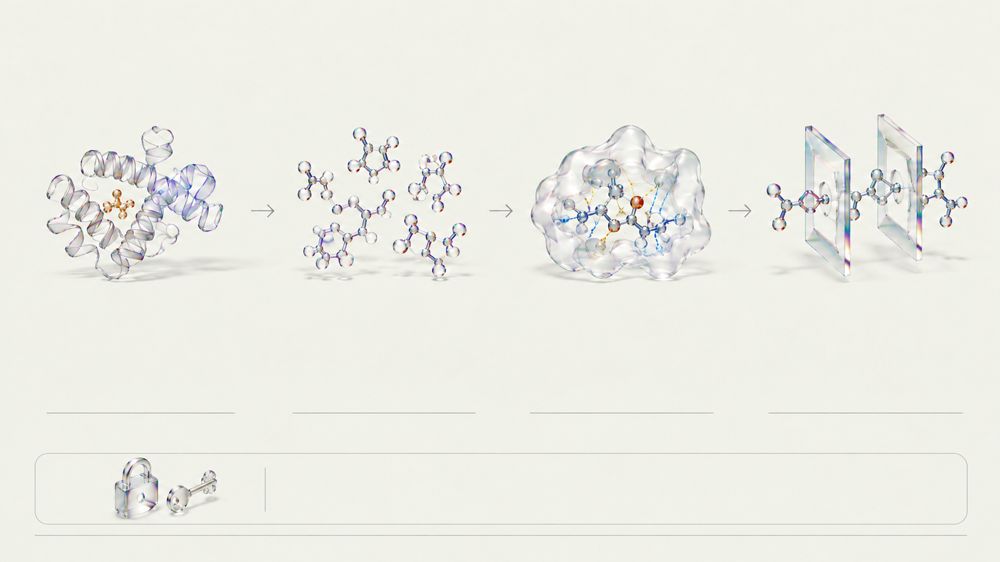

① 질환·표적 데이터
MONDO · Open Targets v4 · PDB
표준 질병 코드와 유전자 연관성 점수로 질환 표적을 살피고, 옹스트롬 단위로 실측된 12종 단백질 3D 실험 구조를 불러옵니다.
3D 구조 12종 · 0~1점

CRISTA · PIPELINE OVERVIEW
질병 표적 선정부터 물성 계산, 3D 도킹, 독성·규제 심사까지 네 단계로 이어집니다.
MONDO · Open Targets v4 · PDB
표준 질병 코드와 유전자 연관성 점수로 질환 표적을 살피고, 옹스트롬 단위로 실측된 12종 단백질 3D 실험 구조를 불러옵니다.
3D 구조 12종 · 0~1점
ChEMBL · ZINC · RDKit
표적당 220종 화합물 라이브러리에서 SMILES 구조식을 읽어 분자량, 극성 표면적, 지용성, Ro5, QED와 구조 경고를 계산합니다.
표적당 220종 · QED 0~1
AutoDock Vina 1.2.7 · PLIP
단백질 포켓 안에서 분자 결합 자세와 도킹 점수(kcal/mol)를 추정하고, 아미노산 잔기와의 비공유 결합 상호작용을 프로파일링합니다.
도킹 점수 kcal/mol
ADMET-AI v2 · 서버 규칙 · Claude Opus 5.5
그래프 신경망으로 체내 흡수·독성 신호를 예측하고, 서버 규칙 엔진과 AI 심사관이 특허·동물윤리·임상 신청서의 정합성을 이중 심사합니다.
MPNN 예측 · 2단계 심사
본 파이프라인의 점수와 예측치는 수업용 컴퓨터 탐색 지표이며 실제 생체 내 약효나 임상 안전성을 확정하지 않습니다.